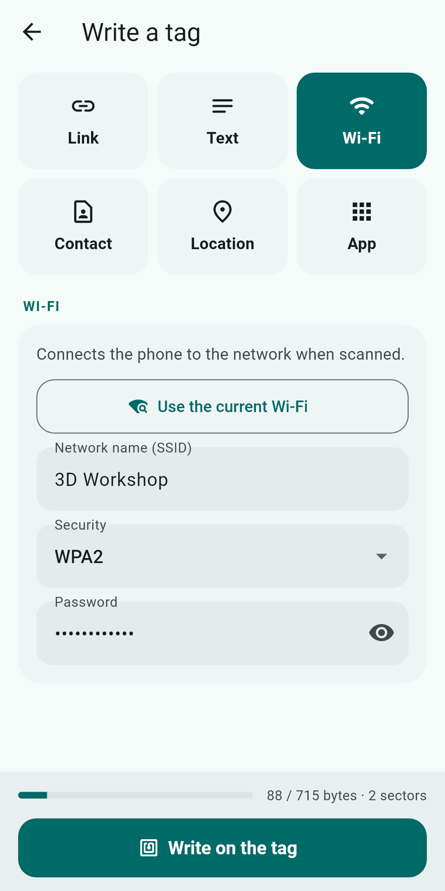
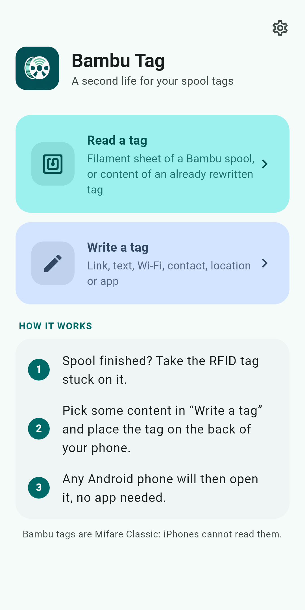
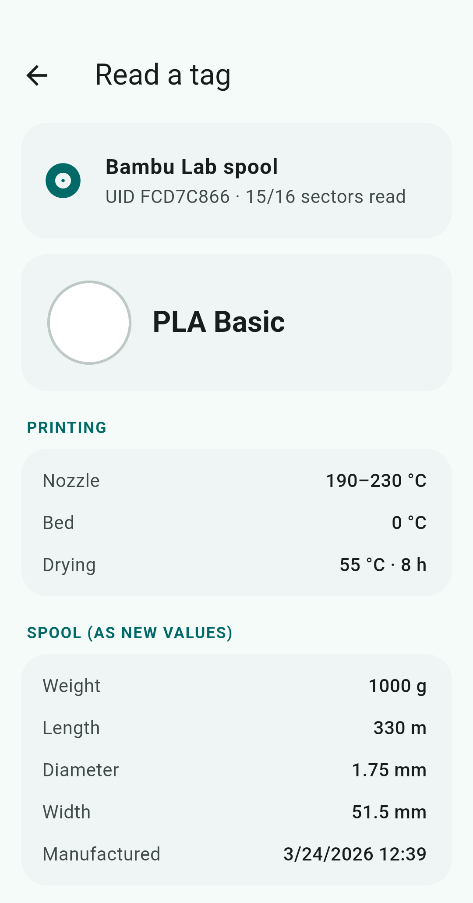
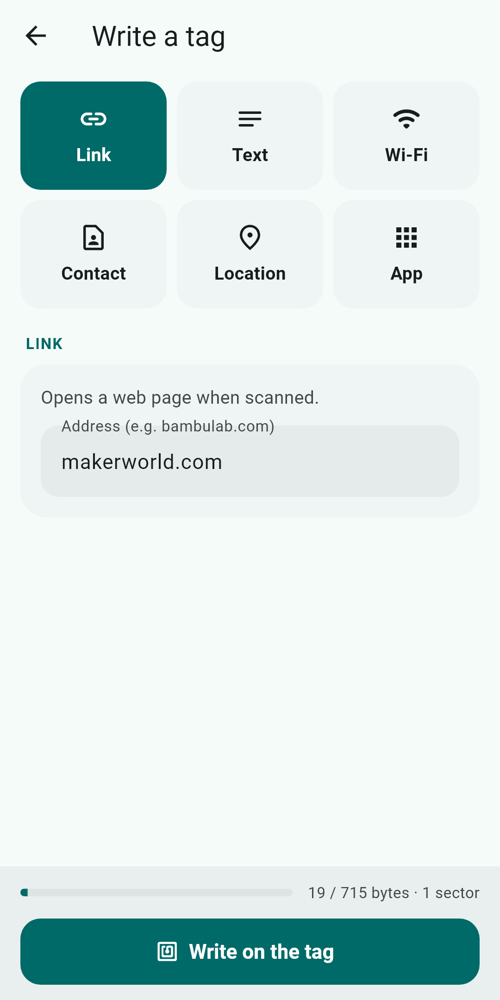
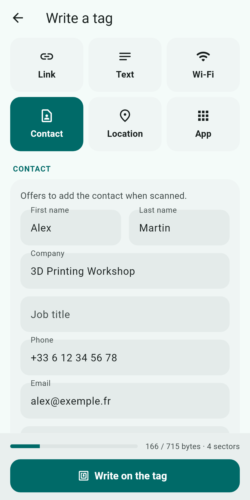
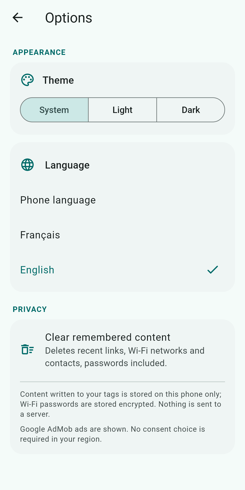

Bambu Tag reads the tag of a Bambu Lab spool, then turns it into a universal NFC tag: link, Wi-Fi, business card, GPS position or app launch, readable by any phone with no app needed.
Get it on Google Play
Two simple actions: read a tag, or write content to it. Everything happens on your phone.
Hold the tag to the phone: the UID and all 16 sectors are shown. For a Bambu spool, the filament card is decoded: material, colour, nominal weight and length, temperatures, production date.
Six content types in standard NDEF format, then read by any Android phone with no app to install.
What you write is read back and compared before success is announced. A counter shows the space used (about 700 bytes maximum) and a confirmation is required before writing.
Each successfully written content is remembered on the phone: reload it in one tap or delete it, with undo. Wi-Fi passwords are stored encrypted.
One button fills in the network the phone is connected to. The password, which Android does not provide, is typed once and then recalled from memory.
Interface in both languages, light or dark theme, chosen in the options or following the phone.
What the phone of the person scanning the tag does.
| Type | On scan |
|---|---|
| URL | opens the page |
| Text | shows the text |
| Wi-Fi | offers to join the network |
| Business card (vCard) | offers “Add to contacts” |
| GPS position | opens the maps app at that spot (coordinates copied from Maps, or current position) |
| App | launches the chosen app, or opens its Play Store page if not installed |





From an empty spool to a reused tag, in three steps.
On a finished spool, peel off the RFID tag stuck on it.
In “Write a tag”, choose the type and fill in the fields. The counter checks it fits.
Hold it to the back of the phone. The content is written, then read back.
No account, no server: your content stays on the phone. Location is requested only when you ask for it. Google AdMob ads are shown, with a consent form in the EEA, the UK and Switzerland.
Read the privacy policyNo. Writing replaces the tag's keys: the printer no longer recognises it. Only write to tags from empty spools.
Only for “Current Wi-Fi” (Android requires this permission to read the network name) and “Current position”. Nothing is sent anywhere.
Yes: an NFC tag's content can be read without protection. Only write a Wi-Fi password to a tag you keep at home, for example for guests.
An NXP NFC chip is required. Other chips may lack low-level Mifare Classic access. Also check that the tag is a Mifare Classic 1K.
Yes, with Google AdMob ads. The app stays fully usable if you decline personalised ads.